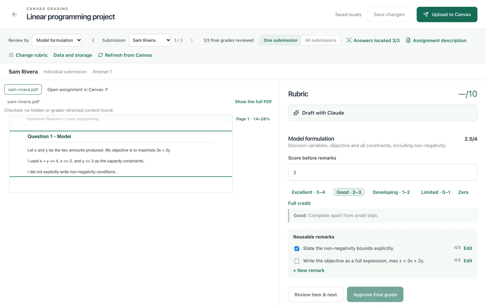
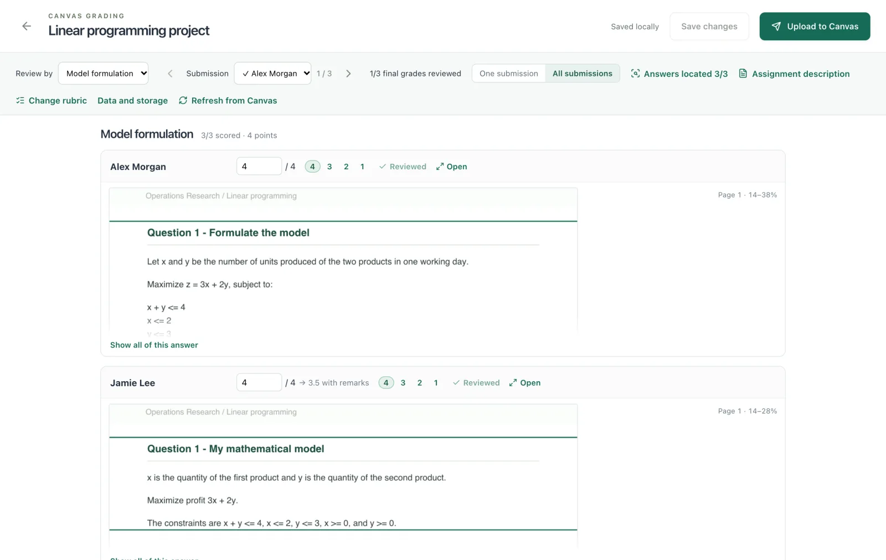

Thoughtful grading.
Less busywork.
Clear rubrics. A closer look at the work.
More room for useful
feedback.
Review student work by question or rubric item, with optional AI help alongside it.
Explore the workflow Try the betaFree for anyone · Mac, Windows and Linux
How it works.
From Canvas to reviewed grades, and back to Canvas.
-
Choose your course and assignment
Download the assignment description, rubric and student submissions from Canvas into your workspace. Already started grading in Canvas? Rubricraft picks up the rubric scores and comments, so you can continue where you left off.
-
Review by question or rubric item
Work through the same question across students, or focus on one rubric item at a time. A question can have several rubric items.
-
Approve and send to Canvas
Grade manually or ask Claude for a draft. Review the grades and feedback, make any changes, and approve. You see exactly what will be sent before Rubricraft uploads the final grades and feedback to Canvas.
Grade the way you already do.
Rubric items, reusable remarks and consistent points across students: a method many teachers already know.
-
One rubric item at a time
Go through every student on the same question or rubric item, so the same standard applies to everyone. Claude can find where each student answered it, and Rubricraft cuts out just that part, so you can score every student's answer in a row.
-
Levels set the judgement
Choose the rubric level that fits the answer, such as Excellent, Good or Developing. That sets the starting score, and Canvas receives the level with the grade.
-
Reusable remarks with points
Write a remark once, such as “State the non-negativity bounds, −0.5”, and apply it to every answer with the same issue. Remarks add or take away points from the chosen level, within its range. If they would take the score outside it, you are warned to move the answer to another level. Change a remark's wording or points later and every student who has it is updated, and marked for you to check again.
-
Edit the Canvas rubric while you grade
Found a missing rubric item halfway through? Add, edit or remove items and their levels from the grading screen, and Rubricraft updates the rubric in Canvas. Every change is previewed, with the new total and the scores it affects, before Canvas is touched.
-
PDF and Word submissions
Typed and handwritten PDFs, scans turned upright, and Word documents, all read on your computer. Excel workbooks come in the next release. Rubricraft warns you about text a reader would not see, such as hidden or white text.
-
AI drafts that follow your method
Claude starts from full credit, reuses your remarks where they fit and suggests new ones only when needed. Its drafts use the same remarks you do, so you can review them quickly, and nothing counts until you apply and approve it.
See it in use.
Screens from the app, with a fictional course and students.




Runs on your computer.
A desktop app for Mac, Windows and Linux. Your files and grading work are stored on your computer. You can use Rubricraft without AI.
If you request AI grading, student work is sent to Anthropic. For rubric help, the material sent may include your own assignment description and rubric.
Claude is optional. You can grade and write feedback yourself.
IN DEVELOPMENT
Grading that improves the course.
Grading shows more than how each student did. While you grade and give feedback, Rubricraft will help you learn from the assignment itself.
-
What students still need clarified
Patterns across the class: common misunderstandings and topics worth revisiting in teaching.
-
How the assignment can improve
Clearer instructions, a sharper rubric and better student preparation for next time.
-
How it aligns with the learning outcomes
Which course learning outcomes each assignment and rubric item assesses, and how well the class meets them. Already in the beta: enter each course's learning outcomes, or let Claude read them from the course's web page for you to check.
Each round of grading then improves the assessment for the next. You will also be able to talk the grading through with Claude, explaining how the work should be graded and refining drafts together. You review and approve any changes.
BETA
Try the beta.
Free for anyone. We would love to hear what works and what does not.
Download for Mac, Windows or Linux
Before you start
- This is an early preview. Try it first on a sandbox or a past course.
- You need a Canvas access token: in Canvas, open Account › Settings › New access token.
- Nothing is sent to Canvas until you preview and approve it. Claude is optional and uses your own Claude account.
Opening it the first time
- Mac (Apple silicon, M1 or later): drag Rubricraft into Applications. The beta is not yet signed by Apple, so macOS blocks it at first. Open it once, then go to System Settings › Privacy & Security and choose Open Anyway.
- Windows: if SmartScreen warns about an unknown publisher, choose More info › Run anyway.
-
Linux: install the
.deb, or make the.AppImageexecutable and run it.
Feedback
Report a problem or suggest an idea on GitHub (a free GitHub account is needed). Please never include student names, student work or your Canvas token.
A few good questions.
Does Rubricraft cost anything?
No. Rubricraft is free for anyone to use, without restrictions. The optional AI help uses your own Claude account, so Anthropic’s pricing applies to that part only.
Do I need AI to use Rubricraft?
No. You can review work, apply the rubric, assign grades, and write feedback manually. You choose whether to ask Claude for help.
Does AI decide the grades?
No. AI provides draft suggestions for review. The teacher checks the evidence, changes the draft, and makes the final decision. Only grades you have approved can be sent to Canvas, and an existing Canvas grade is never replaced without your explicit choice.
Where does my work go?
Downloaded files and grading work are stored on your computer. Canvas connects to your institution. Requesting AI grading sends student work and grading instructions to Anthropic. Help with a rubric may involve sending your own assignment description and rubric. AI is optional in both cases.
Can I use my own Claude?
Yes. Rubricraft connects to the Claude installation on your computer for optional help with grading, rubrics, and feedback.
What if a submission tries to instruct the AI?
Rubricraft flags text in a PDF or Word document that a reader cannot see, or that is addressed to an AI grader, and shows it to you above the submission. It is a prompt to look closer, not proof of misconduct, and it cannot catch everything. That is one reason AI only ever drafts and you approve every grade.
Can I continue grading I started in Canvas?
Yes. Rubric scores and comments already in Canvas are brought into Rubricraft for every submission you have not graded there yet, and nothing you have graded is overwritten. Finish the remaining submissions by hand or with AI drafts, or revisit earlier ones.
When can I try it?
Now: download the beta. It covers course and assignment browsing, submission downloads (PDF and Word), locating each student's answer to a rubric item, review by rubric item with levels and reusable remarks, changing the rubric while you grade, optional Claude drafts, and sending approved grades back to Canvas. Still in development: grading by conversation, class-wide feedback for the teacher, and linking grading to the course learning outcomes, which you can already enter for each course.
Rubricraft is developed at the University of Iceland, School of Engineering and Natural Sciences, within the project “Betra námsmat með gervigreind” (Better assessment with AI), supported by the University of Iceland Teaching Fund (Kennslumálasjóður).